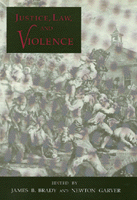

Philosophers examine the role of violence in modem society, particularly its relation to justice
Philosophers examine the role of violence in modem society, particularly its relation to justice


 Philosophers examine the role of violence in modem society, particularly its relation to justice
Philosophers examine the role of violence in modem society, particularly its relation to justice

|  |
Justice, Law, and Violenceedited by James B. Brady and Newton Garvercloth EAN: 978-0-87722-843-1 (ISBN: 0-87722-843-4) |
How is it that law at the same time provides among the most sophisticated alternatives to violence and among the most elaborate justifications for violence? The question is the focus of this collection of essays by philosophers from Canada, Finland, Germany, Italy, and the United States, representing Anglo-American Analytic as well as Continental schools of thought. In challenging commonly accepted reasons for using violence, the contributors examine its role in modem society and, particularly, its relation to justice.
In Part I, the nature of violence is treated. Essays concern the difference between collective violence and private violence; and the relations of morality, of human nature, and of law to the concept of violence. Part II examines patterns of legitimation or justification, with reference to their application to violence. In Part III, the special problems of punishment, terrorism, and self-defense (violence by battered women) are grappled with.
Preface
Introduction to the Issues
Part I: Violence
1. The Idea of Collective Violence – John Ladd
2. Emotiveness and Elusiveness in Definitions of Violence – Robert Holmes
3. Passive Disobedience as Violence – Eike von Savigny
4. Coercion and Violence – Thomas Pogge
5. The Nihilistic Significance of Violence – Sergio Cotta
6. Violence and Communication – Kenneth Baynes
Part II: Law and Legitimation
7. Limits of Legitimation and the Question of Violence – Bernhard Waldenfels
8. The Phenomenological Redescription of Violence – Wojciech Chojna
9. Getting Even – Elizabeth Wolgast
10. The Pursuit of Ideals – Newton Garver
11. Force, Violence, and Law – Jan Narveson
12. Violence, Law, and Basic Rights – Carl Wellman
Part III: Controversial Instances of Allegedly Legitimate Violence
13. Punitive Violence and Its Alternatives – Hugo Adam Bedau
14. Crime and Punishment – André Maury
15. Terrorism, Rights, and Political Goals – Virginia Held
16. The Legitimation of Female Violence – Lance K. Stell
Bibliography
About the Contributors
Index of Names
James B. Brady is Associate Professor of Philosophy at State University of New York at Buffalo and also has a degree in law.
Newton Garver is Distinguished Service Professor of Philosophy at State University of New York at Buffalo.
Contributors: Kenneth Baynes, Hugo Adam Bedau, Wojciech Chojna, Sergio Cotta, Virginia Held, Robert Holmes, John Ladd, Andre Maury, Jan Narveson, Thomas Pogge, Lance K. Stell, Eike von Savigny, Bernhard Waldenfels, Carl Wellman, Elizabeth Wolgast, and the editors.
© 2015 Temple University. All Rights Reserved. This page: http://www.temple.edu/tempress/titles/792_reg.html.